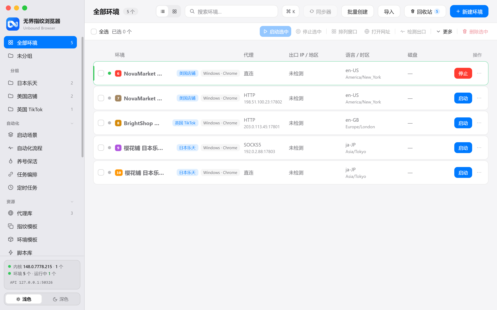
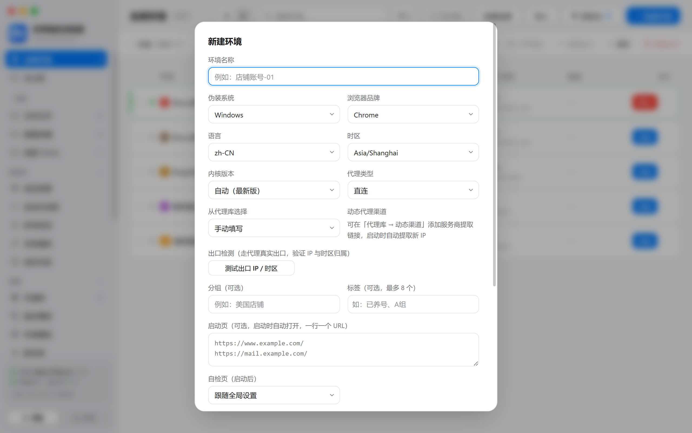
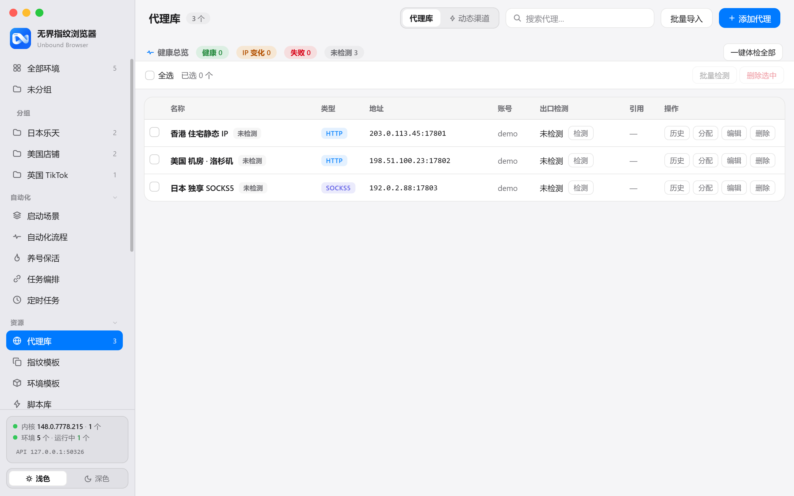
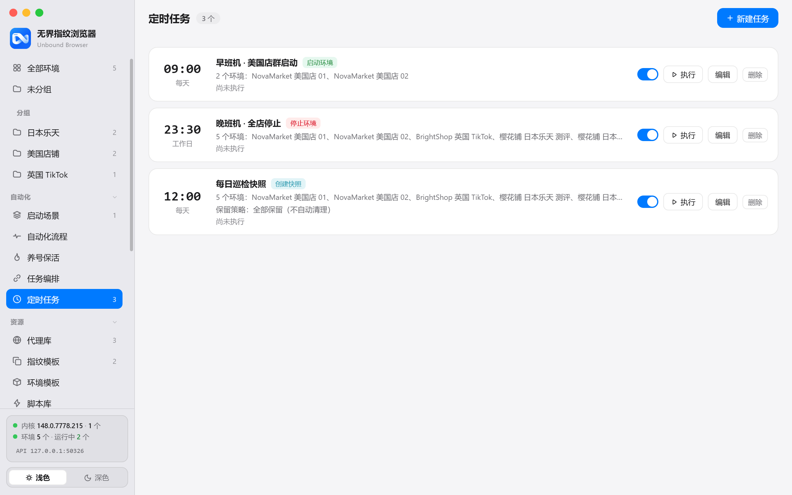
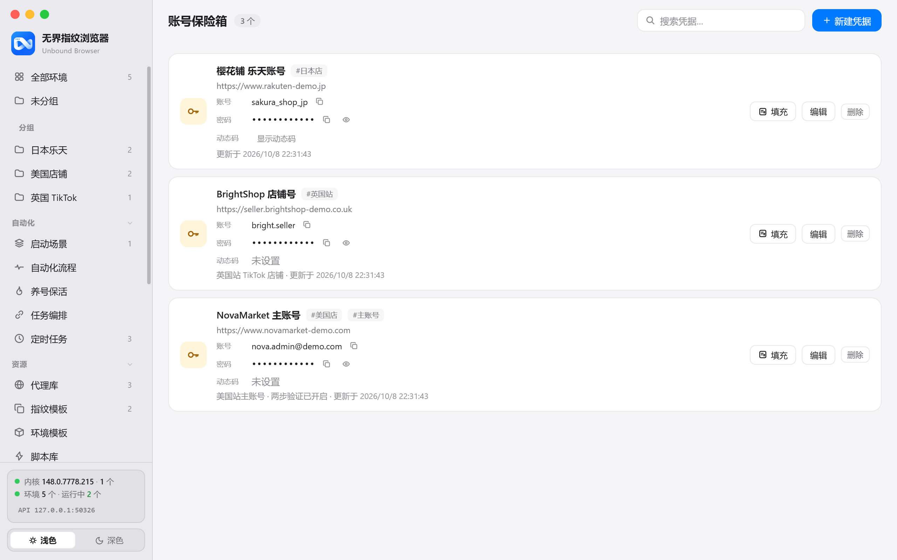
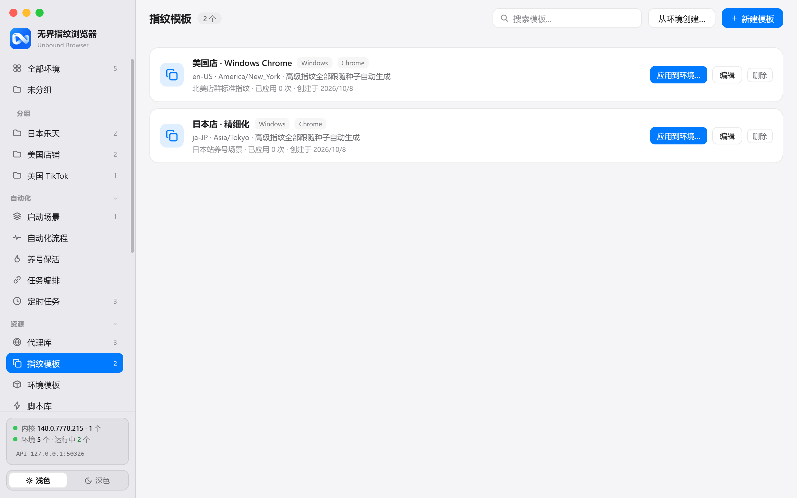
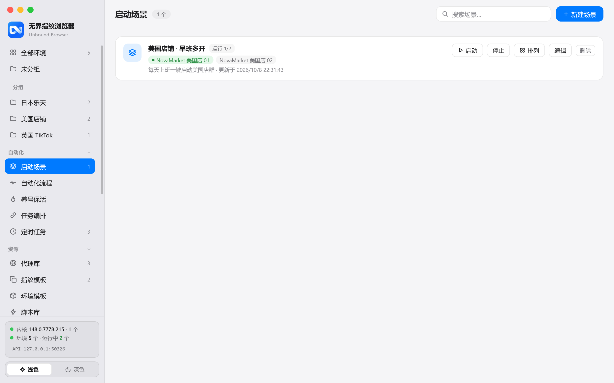
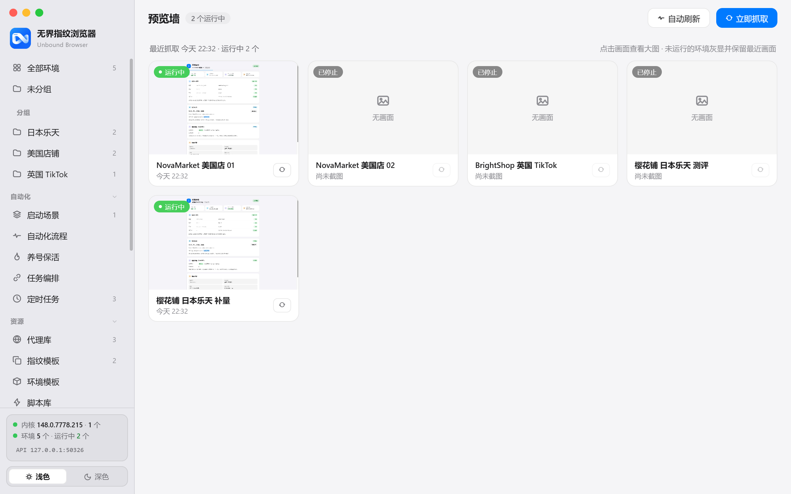

环境完全隔离
每个环境拥有独立的 Cookie、缓存与本地存储，多账号并行互不串扰，支持分组、标签与回收站管理。
面向跨境电商、社媒矩阵与广告投放的专业防关联浏览器。 每个环境拥有独立的指纹与数据，从创建、启动到批量运维， 一切都在你自己的电脑上完成。

核心能力
从环境创建到批量运维，每一步都经过精心设计。
每个环境拥有独立的 Cookie、缓存与本地存储，多账号并行互不串扰，支持分组、标签与回收站管理。
一个种子串起整套指纹：系统平台、浏览器品牌与版本、CPU 核心数、语言与时区一致生成，环境真实可信。
HTTP / SOCKS5 代理库集中管理，动态代理渠道自动提取新 IP，启动前代理预检，杜绝真实 IP 泄漏。
批量创建、批量启动、窗口一键排列；身份体检自动排查泄漏与指纹撞车，规模化运营也从容有序。
内置本地 HTTP API 与 MCP 端点，支持 Playwright 直连调试端口，脚本、爬虫与 AI Agent 即插即用。
局域网主机 / 客户端双模式：一台电脑运行环境，团队成员经同款客户端实时协作，附多用户权限与审计日志。
使用场景
无论是单人店群还是团队矩阵，无界都能撑起你的工作流。
一个店铺一个环境：买家号、卖家号、测评号彻底隔离；代理出口与店铺注册地精确匹配，大幅降低风控误伤。
TikTok、Facebook、Instagram 多账号独立运行；配合养号保活与定时任务，自动维持账号活跃度与稳定登录态。
广告账户隔离投放，多地区素材与落地页 A/B 测试；环境出口与目标市场一致，投放数据更真实可信。
主机模式统一托管环境与代理资源，团队成员经局域网客户端接入协作；权限分级，操作留痕。
深度能力
打开软件就能感受到的完成度。
新建环境时即可精确设定系统平台、浏览器品牌、语言与时区与代理出口。 指纹模板与环境模板把常用配置沉淀为资产，配置一次，批量复用。

代理库统一纳管全部出口资源。健康总览实时呈现「健康 / IP 变化 / 失败」分布， 一键体检全部代理，每条代理保留检测历史，让出口质量尽在掌握。

一键切换浅色 / 深色主题，夜间长时间值守依然舒适。 紧凑的列表布局把代理、出口、语言时区与磁盘状态收进一屏，多开窗口再多也不凌乱。

全景功能
从环境、代理到自动化、数据与团队协作，全部内置，无需拼装。
环境与自动化
界面巡览
真实客户端界面截图，点击任意一张查看大图。





自动化接入
无需 SDK。一个本地接口，驱动全部环境。
# 启动环境并获取 CDP 调试端点
curl -X POST http://127.0.0.1:50325/api/envs/NovaMarket/start
# 列出全部环境与运行状态
curl http://127.0.0.1:50325/api/envs
# 停止环境
curl -X POST http://127.0.0.1:50325/api/envs/NovaMarket/stopimport { chromium } from 'playwright'
// 接入运行中的环境（自动等待调试端口就绪）
const browser = await chromium.connectOverCDP(cdpEndpoint)
const page = browser.contexts()[0].pages()[0]
await page.goto('https://example.com')同时提供 MCP（Model Context Protocol） 端点，Claude Desktop、Cursor 等 AI 客户端可直接调用环境能力； 配合任务编排与定时任务，把「一人管理百店」变成日常。
安全与隐私
本地优先架构，从存储到访问全程守护。
全部环境数据保存在你的电脑上，不上传云端；支持 WebDAV 备份到你自己的存储空间。
启动即上锁，未输入主密码无法进入界面，自动锁定与严格模式可按需开启。
账号凭据加密保管，支持 TOTP 动态口令，按环境一键填充，告别明文表格。
团队成员的关键操作全程留痕，支持筛选与导出，责任清晰可追溯。
快速上手
不需要任何前置知识，跟着三步走即可。
下载 Windows 安装包，双击完成安装；首次启动选择「本机使用」，即可进入完整功能模式。
点击「新建环境」并命名，选择代理或先用直连体验；指纹由种子自动生成，无需逐项配置。
点击启动按钮，独立指纹的浏览器窗口即刻就绪；需要多开时，批量创建与启动场景帮你搞定。
常见问题